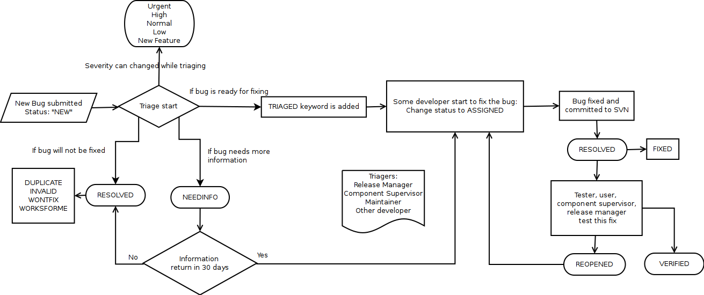

Last Modified Date: October 26, 2011
| Author: | Semen Cirit |
|---|---|
| Version: | 0.2 |
Bug Cycle¶

This document gives information about Pardus bug tracking system process. The process that manage from Pardus bugzilla: package review, new contributor, security process are not included in this process.
- When the bug is newly submitted it takes NEW status.
Some details needed when repoting a bug, see http://bugs.pardus.org.tr/page.cgi?id=bug-writing.html
- Triage starts:
After the bug is submitting, if it needs additional information , the bug status left the same but the NEEDINFO keyword is added.
- If the bug does not need any additional information:
- The triager can change the severity:
- Severity is used to set how sewere the bug is. It can be set by a triager, but the triagers may not rechange the severity, when the assignee and/or package maintainer change the initial severity level chosen by the triager.
- Severities should be changed with following bug importance guide.
- If the bug is an insolubale bug:
- WONTFIX: Bugs are not related to Pardus and will never be fixed
- DUPLICATE: Bugs which have duplicates which are already been reported
- LATER: Bugs can be fixed for the next release or for a later time
- INVALID: Bugs that are not realy a bug
- WORKSFORME: Bugs could not be reproduced
- NEXTRELEASE: Bugs fixed in next release
Bugs set as a tracker bug of a release by only release managers or related component supervisor.
When triage is finished, the TRIAGED keyword is given.
When a developer starts to deal with the bug he/she changes the status to ASSIGNED.
If the bug fixed by its developer,
When the developer has been sure that the bug fixed, he/she should be fixed bug via SVN commits:
The SVN commit should include:
"BUG:FIXED:<BUGID>"This commmit will automatically change the resolution of the bug as RESOLVED/FIXED
- The bug fixed program will pass the stable repository test process:
- If the bug reproducible, the bug resolution is changed to REOPENED
- If the bug can not be reproducible, it is left RESOLVED/FIXED
- If new bugs found during stable repository tests, it should be reported by testers.
REOPENED bugs are reviewed again by assignee and will be fixed.